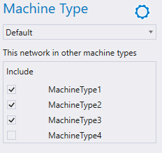

A network can be connected from one machine type to another. Select the network and then select the machine type to include the network.

Epec Oy reserves all rights for improvements without prior notice.
Source file Connecting_a_Network_from_on_Machine_Type_to_another.htm
Last updated 25-Jun-2025